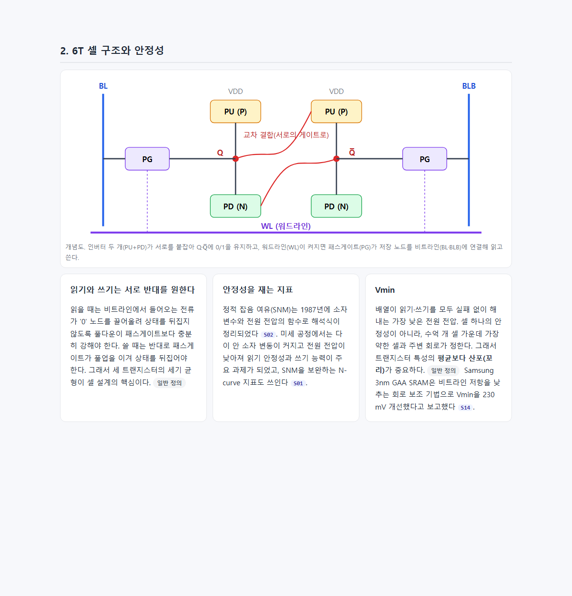
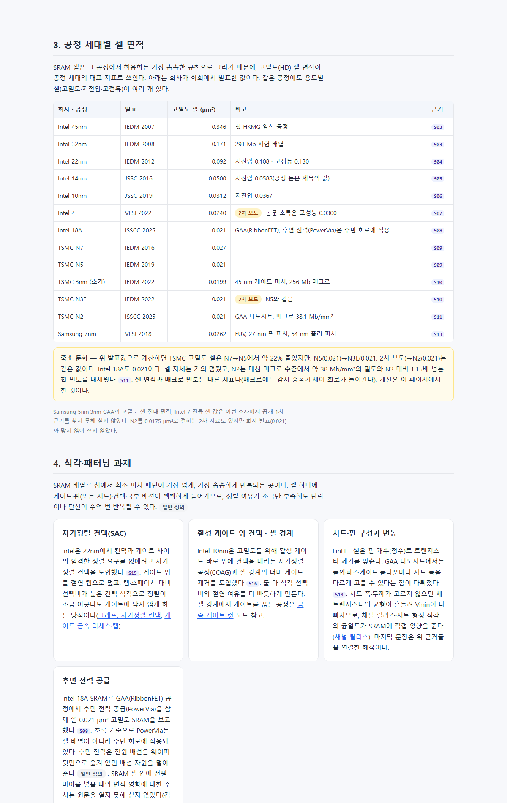
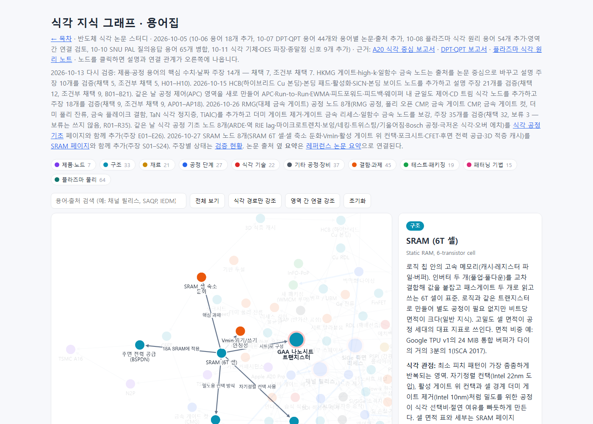

#62
SRAM 내용 추가 — 로직 칩의 온칩 메모리 페이지·그래프 노드
지시 (원문)
SRAM 관련 내용 추가 Logic 반도체에서 SRAM 역할을 뭘까?
분석 (Claude의 정리)
- 두 가지 요청이다. 하나는 질문(로직 칩에서 SRAM의 역할)이고, 다른 하나는 사이트에 SRAM 내용을 추가하는 작업이다.
- 질문에는 채팅으로 먼저 답했다. 답한 내용은 다음과 같다. 수치는 검증 전이라고 밝혔다.
- 역할: 연산 장치 옆의 캐시·버퍼.
- 구조: 6T 셀.
- 로직 칩 안에 넣는 이유: 같은 공정으로 만들 수 있고 빠르다. 대신 면적이 크다.
- 공정 지표로서 셀 면적의 의미.
- 식각 관점: 최소 피치 반복 영역이고, 변동이 Vmin에 영향을 준다.
- 그래프에는 SRAM 노드가 없었다. 공정 세대별 셀 면적, 셀 축소 둔화, SRAM 배열의 식각·패터닝 과제를 근거와 함께 넣는다.
과정
- 자문.
- astra(high, 백그라운드): 6T 구조·Vmin, 용도와 면적 비중, Intel·TSMC·Samsung 세대별 셀 면적, 핀·시트 구성, 포크시트·CFET, 식각 과제(게이트 컷·SAC·후면 전력), 3D 적층 캐시·eDRAM을 물었다.
- jev
- 형태: "별도 학습 페이지 + 그래프 노드"(0.81).
- 가장 깊게 다룰 부분: "SRAM 배열의 식각·패터닝 과제"(0.89).
- 순서: "SRAM 먼저, 사이트 구성 개선은 그 다음"(0.95).
- 기록 단계: "17단계에 이어 붙임"(0.71, 신뢰도 0.56). 따르지 않았다. 17단계는 '식각 공정 기초 보충'이라 내용이 맞지 않고, 지금까지 리서치 주제(HCB·APC·RMG)마다 단계를 따로 만들어 왔기 때문이다. 새 18단계를 만들었다.
- OpenAlex로 1차 출처를 찾았다. 셀 면적이 제목·초록에 있는 회사 공정 논문을 모았고(Intel 32nm·14nm, TSMC N5·N2), 고전 안정성 논문(Seevinck 1987, Grossar 2006), AMD 3D V-Cache, imec 포크시트·CFET 연구도 찾았다.
- astra 결과를 받았다. 셀 면적과 매크로 밀도를 구분하고, 확인하지 못한 값을 따로 표시해 두었다. 확인하지 못한 값은 Samsung 5·3nm 셀, Intel 7 전용 값, CPODE 세부, CPU 전체의 SRAM 면적 비율이다. 이를 바탕으로 장부
ledger/sram.json(비공개)에 주장 24개(S01–S24)를 적었다. lint 오류 0, DOI 27개 실재·제목 일치. - 검증자 5개에 blind 입력만 넘겼다. 1차 결과는 채택 17, 조건부 3, 보류 4였다.
- 보류 4개는 모두 유료 본문(§·Fig.)에만 있는 내용이었다.
- TSMC 3nm의 0.3 V 셀 안정성 대 0.5 V 배열 동작(S12).
- 자기정렬 컨택의 게이트 금속 리세스 부족·과도의 영향(S17).
- 셀 높이를 게이트 컷 규칙으로 분해한 imec 연구(S18).
- PowerVia를 셀 안에 넣을 때 셀이 커지는 수치(S21).
- 조건부 3개는 고쳐서 재검증했다.
- S05 Intel 14nm: 확인되지 않은 핀 구성을 빼고, 셀 면적 근거를 JSSC 2016 확장판으로 바꿨다.
- S07 Intel 4: 초록이 직접 확인해 주는 0.0300 µm²(고성능)와 2차 보도로만 확인된 고밀도 0.0240 µm²를 나눠 적었다.
- S10 TSMC 3nm: 초록 값 0.0199 µm²와 2차 보도 값(N3E 0.021 µm²)을 나눠 적었다.
- 보류 4개는 모두 유료 본문(§·Fig.)에만 있는 내용이었다.
- 최종 gate: 주장 24개 — 채택 20, 보류 4.
- 새 페이지
research/sram_logic.html를 썼다.- 구성: 역할, 6T 셀 회로 그림, 공정 세대별 고밀도 셀 면적 표(13행), 축소 둔화 설명, 식각·패터닝 과제, 포크시트·CFET, 3D 적층 캐시·eDRAM.
- 2차 보도로만 확인된 값에는 '2차 보도' 표시를 달았다.
- 보류 주장(S21)에 기대던 문장 하나를 일반 서술로 바꿨다.
- Intel 18A의 PowerVia는 초록 기준으로 주변 회로에 적용되었다는 점을 검증자 지적대로 표와 본문에 밝혔다.
- 인용 논문 19편의 요약을 썼다. 1차 결과는 채택 17, 조건부 2였다.
- CFET 요약(Liu 2023)은 서로 다른 노드 간 비교라는 조건이 빠졌다는 지적을 받았다. 조건을 넣어 재검증했다.
- Intel 10nm 요약은 한 검증자가 "초록에 셀 면적이 없다"고 판정했다. 다른 검증자는 같은 초록에서 수치를 확인했다. 작성자가 OpenAlex 초록을 직접 열어 보니 첫 문장에 0.0312·0.0367 µm²가 있었다. 판정을 고치지 않고 그대로 기록한 뒤, 위치 표기를 "초록 1번째 문장"으로 구체화해 새 검증자에게 넘겼다. 확인이 나왔다.
- 최종 결과: 19편 모두 채택.
- 그래프에 노드 8개를 추가했다(GAA 영역 7, BEOL 1). 노드는 SRAM 6T 셀, SRAM 셀 축소 둔화, Vmin·읽기/쓰기 안정성, 활성 게이트 위 컨택(COAG), 포크시트, CFET, 후면 전력 공급(BSPDN), 3D 적층 캐시다. 기존 GAA·자기정렬 컨택·금속 게이트 컷·A16·HCB 노드와 관계 15개로 이었다.
- 목차의 공정 리서치 섹션과 학습 경로 4단계(GAA)에 넣었다. 검증 현황에 "SRAM" 묶음을 만들고, 그래프 안내 문구와 목차 숫자를 갱신했다.
- build 결과: 그래프 노드 290개·관계 624개, 논문 요약 185편, 검증 현황 399개(채택 326·조건부 63·보류 10).
--check, 링크(37쪽 0건), 요약 연결, OES 그래프 검사 모두 통과. - 커밋·푸시. GitHub Actions
site-check와 Pages 배포가 모두 성공했다.<계정>.github.io/etch-paper-study/에서 SRAM 페이지, 18단계 기록, 그래프, 목차가 200이고 목차에 새 페이지 링크가 있음을 확인했다.
결과 / 증거
성공 SRAM 학습 페이지와 그래프 노드 8개를 추가했다.
- 역할: 로직 칩 안의 캐시·버퍼. 같은 공정으로 만들 수 있고 빠르지만 면적이 크다. 면적 비중 예로 TPU v1 통합 버퍼가 다이의 약 1/3이다.
- 셀 면적: Intel 0.346 µm²(45nm)에서 0.021 µm²(18A)까지, TSMC 0.027 µm²(N7)에서 0.021 µm²(N2)까지 회사 발표값으로 정리했다. N5 이후 0.021 µm²에서 멈췄고, N2는 매크로 밀도(약 38 Mb/mm²)를 내세웠다. 셀 면적과 매크로 밀도는 다른 지표로 구분했다.
- 식각 과제
- 자기정렬 컨택(Intel 22nm).
- 활성 게이트 위 컨택과 셀 경계 더미 게이트 제거(Intel 10nm).
- GAA 시트 폭 선택과 균일도.
- CFET 연구의 게이트 컷 → 절연 벽 대체.
- 남은 한계
- 근거는 대부분 초록·회사 발표다.
- Samsung 5·3nm 셀 면적, Intel 7 전용 값, CPODE 세부는 공개 1차 근거가 없어 싣지 않았다.
- CPU·GPU 전체의 SRAM 면적 비율도 같은 이유로 싣지 않았다.
- 유료 본문에만 있는 4개 내용(셀 안 PowerVia 면적, SAC 리세스 영향 등)은 보류다.
SRAM 페이지 열기 → · 그래프 SRAM 노드 → · 검증 현황(S01–S24)
6T 셀 구조와 안정성(캡처용 사본에서 2장만 표시):

공정 세대별 셀 면적 표와 식각·패터닝 과제(3–4장):

그래프의 SRAM 노드와 연결:
